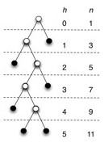
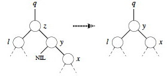

Outline
- Trees, Binary Trees, Binary Search Trees
- Querying BSTs
- Modifying BSTs (Insertion and Deletion)
- Performance of BSTs
Trees, Binary Trees, Binary Search Trees
First, a preliminary look at trees. (This should be review. Some of this material is taken from Thomas Standish Data Structure Techniques (1980) and Goodrich & Tamassia (1998) as well as the Cormen appendix, but is widely published.)
Fundamental Theorem of Free Trees
If G=(V,E) is a finite graph with v > 1 vertices, the following properties are equivalent definitions of a generalized or free tree:
- G is connected and has no simple cycles.
-
G has no simple cycles and has v-1 edges ( E = V - 1) - G is connected and has v-1 edges.
- G is acyclic, and if an edge is added that joins two nonadjacent vertices, exactly one cycle is formed.
- G is connected, but if an edge is deleted, G becomes disconnected.
- Every pair of vertices is connected by exactly one path.
Although this is a definition, the theorem is that these definitions are equivalent. A classic exercise in basic graph theory is to prove each of these statements using the one before it, and #1 from #6.
Comments
When we use the term “tree” without qualification, we will assume that we mean a free tree unless the context makes it clear otherwise (e.g., when we are discussing binary trees).
In some contexts, G=({},{}) and G=({v},{}) are also treated as trees. These are obvious base cases for recursive algorithms.
A forest is a (possibly disconnected) graph, each of whose connected components is a tree.
An oriented tree is a directed graph having a designated vertex r, called the root, and having exacly one oriented path between the root and any vertex v distinct from the root, in which r is the origin of the path and v the terminus.
In some fields (such as social network analysis), the word “node” is used interchangeably with “vertex”. I use “vertex” in these notes but may slip into “node” in my recorded lectures or in class.

Binary Trees
A binary tree is a finite set of vertices that is either empty or consists of a vertex called the root, together with two binary subtrees that are disjoint from each other and from the root and are called the left and right subtrees.
A **full binary tree ** is a binary tree in which each vertex either is a leaf or has exactly two nonempty descendants. In a full binary tree of height h:
- number of leaves = (number internal vertices) + 1.
- number leaves is at least h+1 (first example figure) and at most 2_h_ (second example figure).

- number internal vertices is at least h (first example) and at most 2_h-1 _(second example).
- Total number of vertices (summing the last two results) is at least 2_h+1 _(first example) and at most 2_h+1-1 _(second example).
- Height h is at least lg(n+1)-1 (second example) and at most (n-1)/2 (first example)
A **complete binary tree ** is full binary tree in which all leaves have the same depth and all internal vertices have degree 2 (e.g., second example above).
(Note: some earlier texts allow the last level of a “complete” tree to be incomplete! They are defined as binary trees with leaves on at most two adjacent levels l-1 and l and in which the leaves at the bottommost level l lie in the leftmost positions of l.)
Binary Search Trees (BSTs)
A binary search tree (BST) is a binary tree that satisfies the binary search tree property:
- if y is in the left subtree of x then y.key ≤ x.key.
- if y is in the right subtree of x then y.key ≥ x.key.
BSTs provide a useful implementation of the Dynamic Set ADT, as they support most of the operations efficiently (as will be seen).
Two examples on the same data:


Could we just just say “if y is the left child of x then y.key ≤ x.key, etc., and rely on transitivity? What would go wrong?
Implementations of BSTs include a root instance variable. Implementations of BST vertices usually include fields for the key, left and right children, and the parent.
Querying Binary Search Trees
Note that all of the algorithms described here are given a tree vertex as a starting point. Thus, they can be applied to any subtree of the tree as well as the full tree.
Traversing Trees
Traversals of the tree “visit” (e.g., print or otherwise operate on) each vertex of the tree exactly once, in some systematic order. This order can be Inorder, Preorder, or Postorder, according to when a vertex is visited relative to its children. Here is the code for inorder:
Quick exercise: Do INORDER-TREE-WALK on this tree … in what order are the keys printed?
Quick exercise: How would you define Preorder traversal? Postorder traversal?
Traversals can be done on any tree, not just binary search trees. For example, traversal of an expression tree will produce preorder, inorder or postorder versions of the expressions.
Time to Traverse a BST
Time: Traversals (INORDER-TREE-WALK and its preorder and postorder variations) take T(n) = Θ(n) time for a tree with n vertices, because we visit and print each vertex once, with constant cost associated with moving between vertices and printing them. More formally, we can prove as follows:
T(n) = Ω(n) since these traversals must visit all n vertices of the tree.
T(n) = O(n) can be shown by substitution. First the base case of the recurrence relation captures the work done for the test x ≠ NIL:
T(0) = c for some constant c > 0
To obtain the recurrence relation for n > 0, suppose the traversal is called on a vertex x with k vertices in the left subtree and n−k−1 vertices in the right subtree, and that it takes constant time d > 0 to execute the body of the traversal exclusive of recursive calls. Then the time is bounded by
T(n) ≤ T(k) + T(n−k−1) + d.
We now need to “guess” the inductive hypothesis to prove. The “guess” that CLRS use is T(n) ≤ (c + d)n + c, which is clearly O(n). It’s less clear how they got this guess. As discussed in Chapter 4, section 4 (especially subsection “Subtleties” page 85-86), one must prove the exact form of the inductive hypothesis, and sometimes you can get a better guess by observing how your original attempt at the proof fails. Perhaps this is what they did. We’ll skip the failure part and go directly to proving their hypothesis by substitution (showing two steps skipped over in the book):
Inductive hypothesis: Suppose that T(m) ≤ (c + d)m + c for all m < n
Base Case: (c + d)0 + c = c = T(0) as defined above.
Inductive Proof:
T(n) ≤ T(k) + T(n−k−1) + d
by definition
= ((c + d)k + c) + ((c + d)(n−k−1) + c) + d substiting inductive hypothesis for values < n
= ((c + d)(k + n − k − 1) + c + c + d collecting factors _
= ((_c + d)(n − 1) + c + c + d simplifying _
= ((_c + d)n + c − (c + d) + c + d multiplying out _n−1 and rearranging _
= ((c + d)n + c. the last terms cancel.
Searching for an Element in a BST
Here are two implementations of the dynamic set operation search:


_Quick exercise: Do TREE-SEARCH for D and C on this tree … _
For now, we will characterize the run time of the remaining algorithms in terms of h, the height of the tree. Then we will consider what h can be as a function of n, the number of vertices in the tree.
Time: Both of the algorithms visit vertices on a downwards path from the root to the vertex sought. In the worst case, the leaf with the longest path from the root is reached, examining h+1 vertices (h is the height of the tree, so traversing the longest path must traverse h edges, and h edges connect h+1 vertices). Comparisons and movements to the chosen child vertex are O(1), so the algorithm is O(h). (Why don’t we say Θ?)
Finding the Minimum and Maximum Element
The BST property guarantees that:
- The minimum key of a BST is located at the leftmost vertex.
- The maximum key of a BST is located at the rightmost vertex.
(Why?) This leads to simple implementations:

Time: Both procedures visit vertices on a path from the root to a leaf. Visits are O(1), so again this algorithm is O(h).
Finding the Successor or Predecessor of an Element
Assuming that all keys are distinct, the successor of a vertex x is the vertex y such that y.key is the smallest key > x.key. If x has the largest key in the BST, we define the successor to be NIL.
We can find x’s successor based entirely on the tree structure (no key comparison is needed). There are two cases:
- If vertex x has a non-empty right subtree, then x’s successor is the minimum in its right subtree. (Why?)
- If vertex x has an empty right subtree, then y is the lowest ancestor of x whose left child is also an ancestor of x. To see this, consider these facts: _
* If _y is the successor of x then x is the predecessor of y, so x is the maximum in y’s left subtree (flip the reasoning of your answer to the last question).
* Moving from x to the left up the tree (up through right children) reaches vertices with smaller keys, which must also be in this left subtree.

Exercise: Write the pseudocode for TREE-PREDECESSOR
Let’s trace the min, max, successor (15, 13, 6, 4), and predecessor (6) operations:

Time: The algorithms visit notes on a path down or up the tree, with O(1) operations at each visit and a maximum of h+1 visitations. Thus these algorithms are O(h).
Exercise: Show that if a vertex in a BST has two children, then its succesor has no left child and its predecessor has no right child.
Modifying Binary Search Trees
The key point is that the BST property must be sustained. This is more straightforward with insertion (as we can add a vertex at a leaf position) than with deletion (where an internal vertex may be deleted).
Insertion
The algorithm assumes that the vertex z to be inserted has been initialized with z.key = v and z.left = z.right = NIL.
The strategy is to conduct a search (as in tree search) with pointer x, but to sustain a trailing pointer y to keep track of the parent of x. When x drops off the bottom of the tree (becomes NIL), it will be appropriate to insert z as a child of y.
Comment on variable naming: I would have preferred that they call x
something like leading and y trailing.

Try TREE-INSERT(T,C):
Time: The same as TREE-SEARCH, as there are just a few additional lines of O(1) pointer manipulation at the end.
Discuss: How would you use TREE-INSERT and INORDER-TREE-WALK to sort a set of
numbers?
Think about at home: How would you prove its time complexity?
Deletion
Deletion is more complex, as the vertex z to be deleted may or may not have children. We can think of this in terms of three cases:
- If z has no children, we can just remove it (by setting z’s parent’s pointer to NIL).
- If z has just one child c, then make c take z’s position in the tree, updating z’s parent to point to c and “dragging” c’s subtree along.
- If z has two children, find z’s successor y and replace z by y in the tree (noting that y has no left child):
* If y is z’s right child, then replace z by y (including updating z’s parent to point to y, and y to point to z’s left child) and we are done.
* Otherwise y is further down in z’s right subtree (and again has no left child):
- Replace y with its own right child.
- The rest of z’s right subtree becomes y’s new right subtree.
- z’s left subtree becomes y’s new left subtree.
- Make z’s parent point to y.
The code organizes the cases differently to simplify testing and make use of a common procedure for moving subtrees around. This procedure replaces the subtree rooted at u with the subtree rooted at v.
- It makes u’s parent become v’s parent (lines 6-7), unless u is the root, in which case it makes v the root (lines 1-2).
- v replaces u as u’s parent’s left or right child (lines 3-5).
- It does not update v.left or v.right, leaving that up to the caller.

(If we have time, draw a few examples.)
Here are the four actual cases used in the main algorithm TREE-DELETE(T,z):

No left child (and possibly no children):
If z has no left child, replace z by its right child (which may or may not be NIL). This handles case 1 and half of case 2 in the conceptual breakdown above. (Lines 1-2 of final algorithm.)

No right child (and has left child):
If z has just one child, and that is its left child, then replace z by its left child. This handles the rest of case 2 in the conceptual breakdown above. (Lines 3-4.)
Now we just have to deal with the case where both children are present. Find z’s successor (line 5), which must lie in z’s right subtree and have no left child (why?). Handling depends on whether or not the successor is immediately referenced by z:

Successor is child:
If successor y is z’s right child (line 6), replace z by y, “pulling up” y’s right subtree. The left subtree of y is empty so we can make z’s former left subtree l be y’s new left subtree. (Lines 10-12.)
Successor is not child:
Otherwise, y is within z’s right subtree rooted at r _but is not the root of this subtree (_y≠r).
- Replace y by its own right child x. (Line 7.)
- Set y to be r’s parent. (Line 8-9.)
- Then let y take z’s place with respect to z’s parent __ and left child l. (Lines 10-12.)
Now we are ready for the full algorithm:

The last three lines excecute whenever z has two children (the last two cases above).
Let’s try TREE-DELETE(T,_x_) on x= I, G, K, and B:

Time: Everything is O(1) except for a call to TREE-MINIMUM, which is O(h), so TREE-DELETE is O(h) on a tree of height h.
The above algorithm fixes a problem with some published algorithms, including the first two editions of the book. Those versions copy data from one vertex to another to avoid a tree manipulation. If other program components maintain pointers to tree vertices (or their positions in Goodrich & Tamassia’s approach), this could invalidate their pointers. The present version guarantees that a call to TREE-DELETE(T, z) deletes exactly and only vertex z.
An animation is available at http://www.csc.liv.ac.uk/~ullrich/COMP102/applets/bstree/ (The code shown probably has the flaw discussed above.)
Performance of Binary Search Trees
We have been saying that the asympotic runtime of the various BST operations (except traversal) are all O(lg h), where h is the height of the tree. But h is usually hidden from the user of the ADT implementation and we are more concerned with the runtime as a function of n, our input size. So, what is h as a function of n?
We know that in the worst case, h = O(n) (when the tree degenerates to a linear chain). Is this the expected case? Can we do anything to guarantee better performance? These two questions are addressed below.
Expected height of randomly built binary search trees
The textbook has a proof in section 12.4 that the expected height of a randomly build binary search tree on n distinct keys is O(lg n).
We are not covering the proof (and you are not expected to know it), but I recommend reading it, as the proof elegantly combines many of the ideas we have been developing, including indicator random variables and recurrences. (They take a huge step at the end: can you figure out how the log of the last polynomial expression simplifies to O(lg n)?)
An alternative proof provided by Knuth (Art of Computer Programming Vol. III, 1973, p 247), and also summarized by Standish, is based on average path lengths in the tree. It shows that about 1.386 lg n comparisons are needed: the average tree is about 38.6% worse than the best possible tree in number of comparisons required for average search.
Surprisingly, analysts have not yet been able to get clear results when random deletions are also included.
Balanced Trees
Given the full set of keys in advance, it is possible to build an optimally balanced BST for those keys (guaranteed to be lg n height). See section 15.5 of the Cormen et al. text.
If we don’t know the keys in advance, many clever methods exist to keep trees balanced, or balanced within a constant factor of optimal, by performing manipulations to re-balance after insertions (AVL trees, Red-Black Trees), or after all operations (in the case of splay trees). We cover Red-Black Trees in two weeks (Topic 11), after a diversion to heaps (which have tree-like structure) and sorting.
Next
In Topic 09 we look at how a special kind of tree, a Heap, can be embedded in an array and used to implement a sorting algorithm and priority queues.
After a brief diversion to look at other sorting algorithms, we will return to other kinds of trees, in particular special kinds of binary search trees that are kept balanced to guarantee O(lg n) performance, in Topic 11.
Dan Suthers Last modified: Sun Feb 16 02:15:30 HST 2014
Images are from the instructor’s material for Cormen et al. Introduction to
Algorithms, Third Edition.